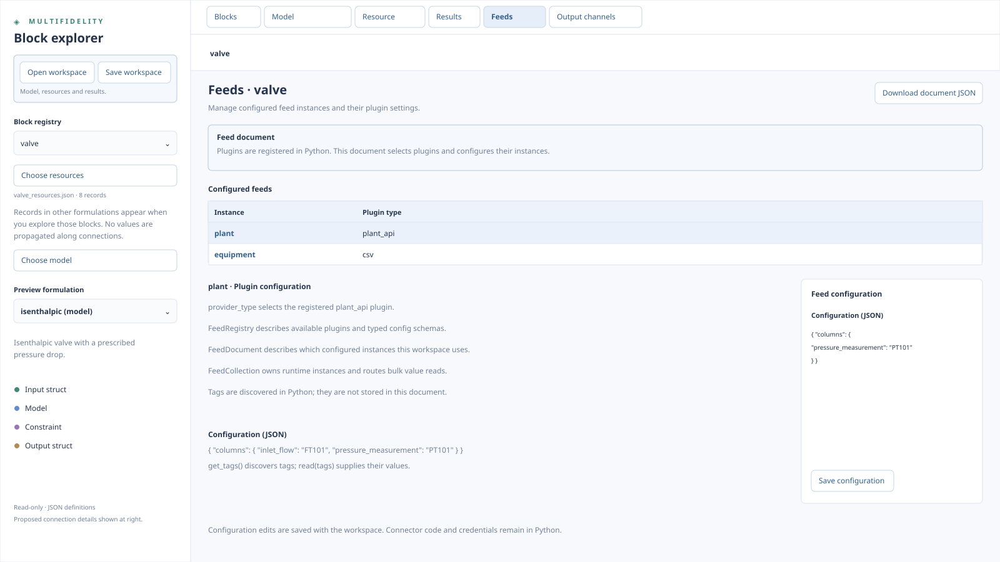

A common interface for simulation data
Design proposal · 16 November 2026
A proposed data registry would give Multifidelity a common way to read measurements from files, databases and live services, then send calculated results to external applications. A single Simulation.solve() call would coordinate the process, while a saved catalogue would show where each input comes from and where each output goes.
The design centres on small Python connectors. Developers would register a source and the information record IDs it supplies. They would register output destinations, or sinks, in much the same way. The code that reads a CSV or queries a plant historian would remain separate from the model.
For an application connecting plant measurements and equipment data to a reporting database, the proposed interface would look like this:
# Proposed API; names are illustrative.
io = DataRegistry()
io.register_source("plant", PlantAPI(client),
ids=["inlet_flow", "pressure_measurement"])
io.register_source("equipment", EquipmentCSV("equipment.csv"),
ids=["valve_pressure_drop"])
io.register_sink("reporting", ReportingSQL(connection),
variables=["outlet.pressure"])
simulation = Simulation(implementation=implementation,
information=information, data=io, solver=solver)
io.describe() # Inspect providers and the record IDs they supply.
run = simulation.solve() # Read inputs, specify, solve and deliver outputs.
Each information record has an id identifying the evidence and a variable_path locating the model variable it describes. The same record ID would be used in provider registration, read requests and returned values. No separate tag or input-binding layer is needed. If an external system uses different names, the connector would translate them internally. Two providers claiming the same record ID would produce a configuration error.
One request per source
Each source would receive one batch containing the data needed for a run. Its connector could satisfy that request with a single database query, a file read or several API calls. This keeps bulk acquisition inside the connector and avoids a public prepare/get sequence, which would require the framework to manage prepared data between calls.
class DataSource(Protocol):
def read(self, request: ReadRequest) -> ReadBatch: ...
class DataSink(Protocol):
def write(self, batch: WriteBatch) -> WriteReceipt: ...
A read request would carry record IDs and the run’s time or final numerical grid. Its response would contain values, units, measurement times and errors, keyed by those same record IDs. An output batch would contain only the destination’s subscribed results, including their units, coordinates and run ID.
The backend would retain responsibility for checking units, freshness and grid alignment before selecting specifications. Connectors would supply observations; trust ranks and decisions about how to use those observations would remain with the information and specification layers. Array interpolation would require an explicit policy.
For each run, the runner would use the existing record’s metadata as a template and replace its value in a fresh information copy. A missing or invalid connected input would stop the run rather than quietly reuse an old value. Fallback evidence would have its own record. This first version would therefore require an existing information record; templates without saved values could follow later.
A solved model and a delivered result are separate outcomes
Outputs would be drawn from the saved result snapshot after a successful solve. Their subscriptions would select model paths directly, allowing calculated variables to be exported even when they have no corresponding input record.
If a destination failed, the run would retain its numerical result and report the delivery failure separately. Python could retry the saved output without fetching measurements or solving again. Automatic retries would require the destination to recognise a delivery ID and avoid accepting the same batch twice.
The registry’s catalogue would be stored with the workspace: source and sink IDs, labels, implementation names, supplied record IDs and output subscriptions, accompanied by a small audit of reads and deliveries. Connector code and credentials would remain in the application. Opening a workspace would display the saved connections without contacting external systems. Supporting this metadata would require a versioned workspace format that continued to accept existing files.
Two tabs for managing connections
The viewer would retain its existing sidebar and add two tabs: Providers and Output channels. Information would continue to hold evidence records, and Results would continue to show numerical snapshots. Connection setup would have its own place in the workspace.
Providers would list registered input sources and the information record IDs each supplies. Selecting a provider would expose its implementation details and the records assigned to it. The record list would be the provider declaration itself, without another mapping layer. The catalogue would be available before any data was fetched.

Output channels would manage destinations and their subscriptions to model variables. Users could select a channel and add or remove variable subscriptions. External naming would stay inside the connector. The same tab would show delivery receipts for the selected run, alongside the channel configuration.

These editors would change provider record lists and output subscriptions, which would be saved with the workspace. Connector code, credentials, execution and retries would remain in Python. Opening a saved workspace would make its catalogue and recorded status available even when the connectors were not installed.
The proposed Simulation.solve() would wrap the existing build, specify, solve and export operations. Applications could keep using those lower-level APIs, while those needing external data would gain a common entry point for acquisition and delivery.
API names and mockup data are illustrative. This proposal includes no runtime or viewer implementation.